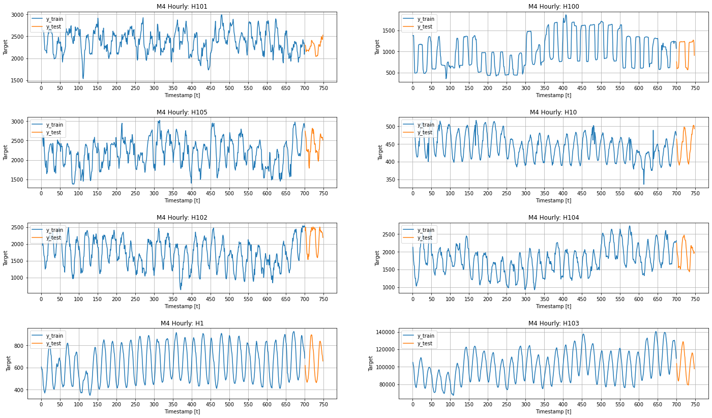
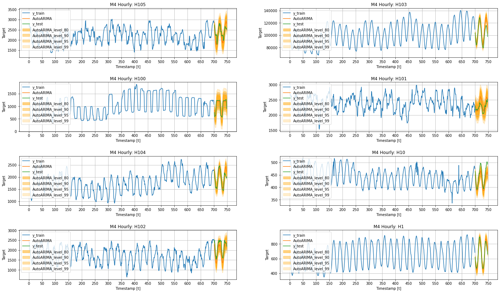
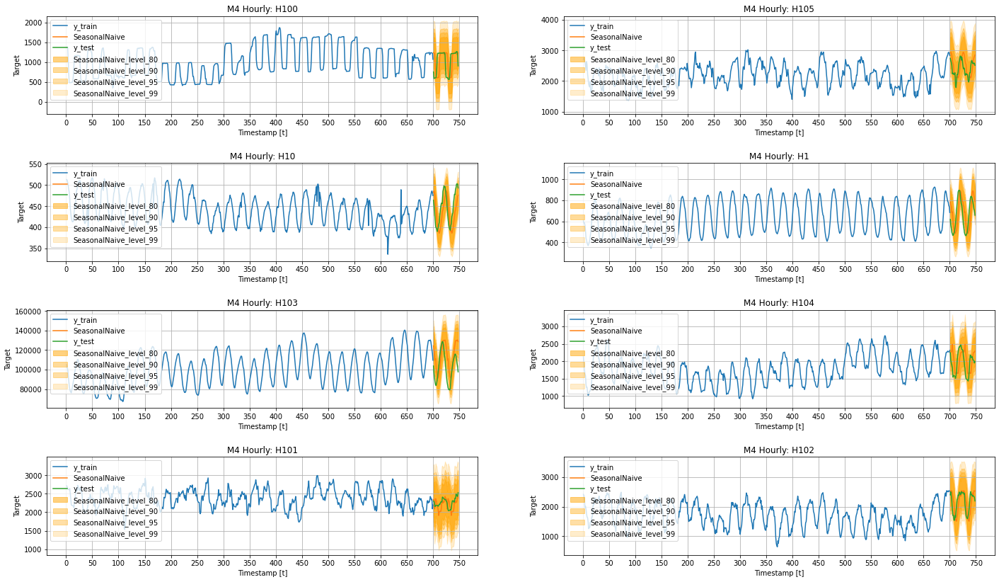
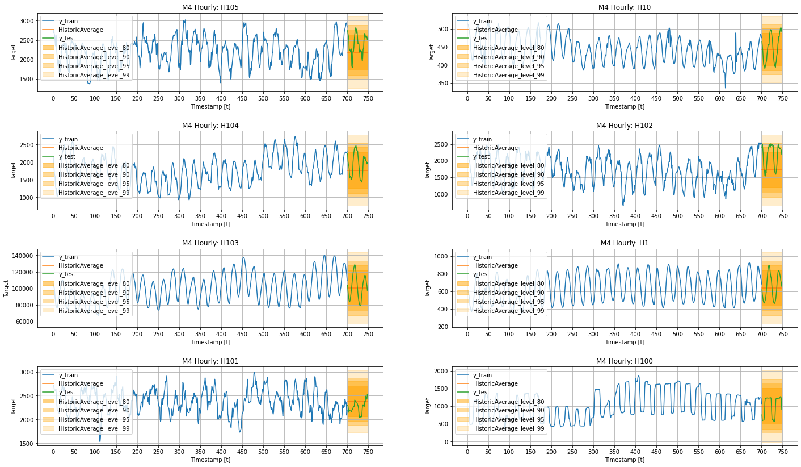
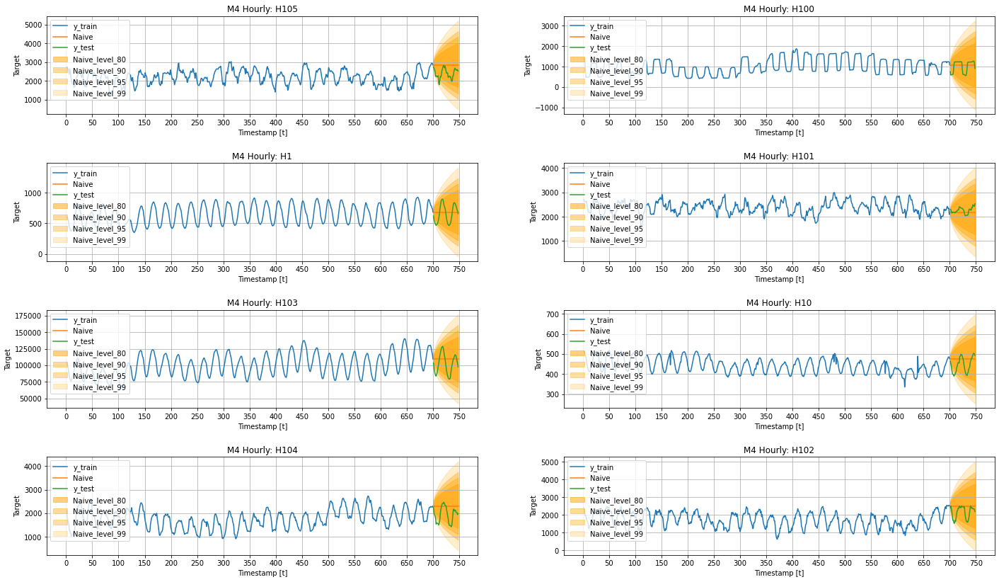
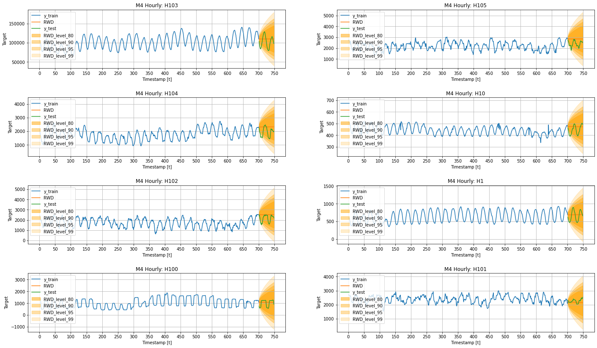

!pip install statsforecastPrediction Intervals
In this example we show how produce prediction intervals.

Installing StatsForecast Library
import random
import warnings
warnings.filterwarnings("ignore")
from itertools import product
import matplotlib.pyplot as plt
import numpy as np
import pandas as pd
from ipywidgets import interact
from statsforecast import StatsForecast
from statsforecast.models import (
AutoARIMA, SeasonalNaive, Naive,
RandomWalkWithDrift, HistoricAverage
)Useful functions
The plot_grid function defined below will be useful to plot different time series, and different models’ forecasts.
def plot_grid(df_train, df_test=None, plot_random=True, model=None, level=None):
fig, axes = plt.subplots(4, 2, figsize = (24, 14))
unique_ids = df_train['unique_id'].unique()
assert len(unique_ids) >= 8, "Must provide at least 8 ts"
if plot_random:
unique_ids = random.sample(list(unique_ids), k=8)
else:
unique_uids = unique_ids[:8]
for uid, (idx, idy) in zip(unique_ids, product(range(4), range(2))):
train_uid = df_train.query('unique_id == @uid')
axes[idx, idy].plot(train_uid['ds'], train_uid['y'], label = 'y_train')
if df_test is not None:
max_ds = train_uid['ds'].max()
test_uid = df_test.query('unique_id == @uid')
for col in ['y', model, 'y_test']:
if col in test_uid:
axes[idx, idy].plot(test_uid['ds'], test_uid[col], label=col)
if level is not None:
for l, alpha in zip(sorted(level), [0.5, .4, .35, .2]):
axes[idx, idy].fill_between(
test_uid['ds'],
test_uid[f'{model}-lo-{l}'],
test_uid[f'{model}-hi-{l}'],
alpha=alpha,
color='orange',
label=f'{model}_level_{l}',
)
axes[idx, idy].set_title(f'M4 Hourly: {uid}')
axes[idx, idy].set_xlabel('Timestamp [t]')
axes[idx, idy].set_ylabel('Target')
axes[idx, idy].legend(loc='upper left')
axes[idx, idy].xaxis.set_major_locator(plt.MaxNLocator(20))
axes[idx, idy].grid()
fig.subplots_adjust(hspace=0.5)
plt.show()Download data
For testing purposes, we will use the Hourly dataset from the M4 competition.
!wget https://auto-arima-results.s3.amazonaws.com/M4-Hourly.csv
!wget https://auto-arima-results.s3.amazonaws.com/M4-Hourly-test.csvtrain = pd.read_csv('M4-Hourly.csv')
test = pd.read_csv('M4-Hourly-test.csv').rename(columns={'y': 'y_test'})In this example we will use a subset of the data to avoid waiting too long. You can modify the number of series if you want.
n_series = 8
uids = train['unique_id'].unique()[:n_series]
train = train.query('unique_id in @uids')
test = test.query('unique_id in @uids')plot_grid(train, test)
Train the model
StatsForecast receives a list of models to fit each time series. Since we are dealing with Hourly data, it would be benefitial to use 24 as seasonality.
models = [
AutoARIMA(season_length=24, approximation=True),
Naive(),
SeasonalNaive(season_length=24),
RandomWalkWithDrift(),
HistoricAverage()
]fcst = StatsForecast(df=train,
models=models,
freq='H',
n_jobs=-1)We can define the level of the forecast intervals we want to produce. StatsForecast will produce these levels.
levels = [80, 90, 95, 99]forecasts = fcst.forecast(h=48, level=levels)forecasts = forecasts.reset_index()forecasts.head()| unique_id | ds | AutoARIMA | AutoARIMA-lo-99 | AutoARIMA-lo-95 | AutoARIMA-lo-90 | AutoARIMA-lo-80 | AutoARIMA-hi-80 | AutoARIMA-hi-90 | AutoARIMA-hi-95 | ... | RWD-hi-99 | HistoricAverage | HistoricAverage-lo-80 | HistoricAverage-lo-90 | HistoricAverage-lo-95 | HistoricAverage-lo-99 | HistoricAverage-hi-80 | HistoricAverage-hi-90 | HistoricAverage-hi-95 | HistoricAverage-hi-99 | |
|---|---|---|---|---|---|---|---|---|---|---|---|---|---|---|---|---|---|---|---|---|---|
| 0 | H1 | 701 | 616.084167 | 585.106445 | 592.513000 | 596.302612 | 600.671814 | 631.496460 | 635.865662 | 639.655273 | ... | 789.416626 | 638.488586 | 436.697418 | 379.492432 | 329.875641 | 232.90242 | 840.279724 | 897.484741 | 947.101562 | 1044.074707 |
| 1 | H1 | 702 | 544.432129 | 494.394348 | 506.358063 | 512.479370 | 519.536865 | 569.327393 | 576.384888 | 582.506165 | ... | 833.254150 | 638.488586 | 436.697418 | 379.492432 | 329.875641 | 232.90242 | 840.279724 | 897.484741 | 947.101562 | 1044.074707 |
| 2 | H1 | 703 | 510.414490 | 443.625366 | 459.594238 | 467.764801 | 477.184906 | 543.644043 | 553.064148 | 561.234741 | ... | 866.990601 | 638.488586 | 436.697418 | 379.492432 | 329.875641 | 232.90242 | 840.279724 | 897.484741 | 947.101562 | 1044.074707 |
| 3 | H1 | 704 | 481.046539 | 404.228729 | 422.595398 | 431.992798 | 442.827393 | 519.265686 | 530.100281 | 539.497681 | ... | 895.510132 | 638.488586 | 436.697418 | 379.492432 | 329.875641 | 232.90242 | 840.279724 | 897.484741 | 947.101562 | 1044.074707 |
| 4 | H1 | 705 | 460.893066 | 378.863678 | 398.476410 | 408.511383 | 420.081024 | 501.705109 | 513.274780 | 523.309692 | ... | 920.702881 | 638.488586 | 436.697418 | 379.492432 | 329.875641 | 232.90242 | 840.279724 | 897.484741 | 947.101562 | 1044.074707 |
5 rows × 47 columns
test = test.merge(forecasts, how='left', on=['unique_id', 'ds'])Plot prediction intervals
Then we can plot the prediction intervals for each model as follows.
AutoARIMA
plot_grid(train, test, level=levels, model='AutoARIMA')
Seasonal Naive
plot_grid(train, test, level=levels, model='SeasonalNaive')
Historic Average
plot_grid(train, test, level=levels, model='HistoricAverage')
Naive
plot_grid(train, test, level=levels, model='Naive')
Random Walk with Drift
plot_grid(train, test, level=levels, model='RWD')